-
Considera en el plano el recinto cerrado finito definido por las funciones \(y=x^2\) y \(100 x=y^2\) al cual pertenece el punto de coordenadas \((2,12)\). Realiza un gráfico del mismo.
Para empezar, tenemos que determinar los puntos de corte entre las dos funciones, que los obtendremos igualándola la una a la otra:
\(x^2=\sqrt{100x}\)
Podríamos obtener el valor de \(x\) para el que se cumple esta ecuación utilizando alguna biblioteca externa, pero en esta entrega solo podemos utilizar las funciones que tenemos en la instalación inicial de R, por lo que resolveremos a mano y obtendremos que las dos funciones se cortan en:
\(x=0, \; \; \; \; \; \; x=10^{2/3}\)
Con todo esto, pintemos la región finita cerrada formada por las dos funciones junto al punto interior dado en el enunciado.
f1 <- function(x){ x^2 }
f2 <- function(x){ sqrt(100*x) }
interseccion_1 = 0
interseccion_2 = 10^(2/3)
# Dibujamos las dos funciones
t <- seq(interseccion_1,interseccion_2, by=0.1)
plot(x=t, y=f1(t), type='l', col="blue", main="Recinto cerrado finito definido
por las funciones dadas", xlab="x", ylab="y", lwd = 3)
lines(x=t, y=f2(t), col="green", lwd = 3)
# Sombreamos el área que encierran
minimo <- pmin(f1(t),f2(t))
maximo <- pmax(f1(t),f2(t))
polygon(c(t, rev(t)), c(maximo ,rev(minimo)), col = "grey", density=40)
# Dibujamos el punto (2,12) dentro del recinto
points(x=2, y=12, pch=19, col="red")
# Ahora, añadimos el texto
text(x=0.5, y=17.5, col=c("blue","green"), cex=1.5,
labels=c("x²\n", expression(sqrt(100*x))))
text(x=2.3,y=12,labels="(2,12)", col="red")
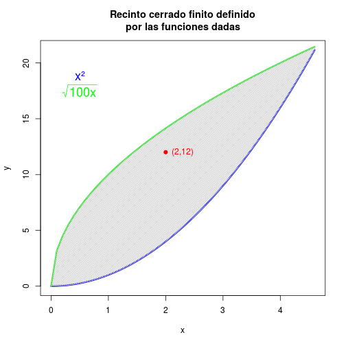
Para no repetir tanto código en adelante, hagamos una función para dibujar el recinto cerrado formado.
plot_functions <- function(x_ini=interseccion_1, x_fin=interseccion_2, add=FALSE){
# Dibujamos las dos funciones
t <- seq(x_ini,x_fin, by=0.1)
if(add) lines(x=t, y=f1(t), col="blue", lwd = 3)
else plot(x=t, y=f1(t), type='l', col="blue", xlab="x", ylab="y", lwd = 3)
lines(x=t, y=f2(t), col="green", lwd = 3)
# Sombreamos el área que encierran
minimo <- pmin(f1(t),f2(t))
maximo <- pmax(f1(t),f2(t))
polygon(c(t, rev(t)), c(maximo ,rev(minimo)), col = "grey", density=40)
}
-
Construye una función que indique si un punto cualquiera del plano pertenece al interior de ese recinto, al borde o al exterior. Comprueba que \((2,12)\) es interior. Aplícala a los puntos \((0,0)\), \((-1,-1)\) y \((30,30)\) y comenta los resultados.
Dado un punto cualquiera, \((x,y)\), se encontrará dentro de la región o en el borde si \(f_1(x)\leq y\) y \(f_2(x)\geq y\), siendo \(f_1(x)=x^2\) la función que delimita la parte inferior de la región y \(f_2(x)=\sqrt{100x}\) la que delimita la parte superior. Dicho esto, procedamos a escribir nuestra función, que devolverá una lista con información que nos será útil para el ejercicio 4.
posicionPunto <- function(x,y,mostrar=TRUE){
if(!is.nan(f1(x)) && !is.nan(f2(x))){
value.min=f1(x)
value.max=f2(x)
if(value.min<y && value.max>y ){
if(mostrar) print("El punto está dentro del recinto")
return(list(Dentro=TRUE, Pos="Dentro"))
}
if(value.min>y || value.max<y ){
if(mostrar) print("El punto está fuera del recinto")
return(list(Dentro=FALSE, Pos="Fuera"))
}
if(value.min==y || value.max==y){
if(mostrar) print("El punto está en el borde del recinto")
return(list(Dentro=TRUE, Pos="Borde"))
}
}else{
if(mostrar) print("El punto está fuera del recinto")
return(list(Dentro=FALSE, Pos="Fuera"))
}
}
Veamos ahora su correcto funcionamiento con los puntos dados en el enunciado.
## [1] "El punto está dentro del recinto"
## $Dentro
## [1] TRUE
##
## $Pos
## [1] "Dentro"
## [1] "El punto está en el borde del recinto"
## $Dentro
## [1] TRUE
##
## $Pos
## [1] "Borde"
## [1] "El punto está fuera del recinto"
## $Dentro
## [1] FALSE
##
## $Pos
## [1] "Fuera"
## [1] "El punto está fuera del recinto"
## $Dentro
## [1] FALSE
##
## $Pos
## [1] "Fuera"
## [1] "El punto está fuera del recinto"
## $Dentro
## [1] FALSE
##
## $Pos
## [1] "Fuera"
Para comprobar que la función ha hecho su trabajo y ha funcionado correctamente, mostraremos los puntos junto al recinto en una gráfica.
# Añadimos los puntos estudiados
plot(x=c(2,0,-1,3), y=c(12,0,1,20), pch=19, col=c("red","black","purple","brown"),
xlab="x", ylab="y", xlim=c(-1,5), ylim=c(0,25), cex=1.5)
# Dibujamos las funciones
plot_functions(add=T)
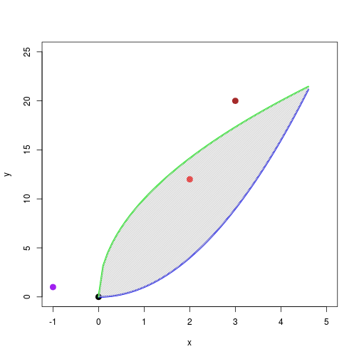
Por último, notemos que se puede transformar este método fácilmente para hacer que sea válido para cualesquiera dos funciones que le pasemos por parámetro (aunque realmente lo que se está comprobando es si el punto se encuentra entre las dos funciones o no).
posicionPunto.2 <- function(x,y,fun1,fun2,mostrar=TRUE){
if(!is.nan(fun1(x)) && !is.nan(fun2(x))){
# Tomamos el valor minimo y maximo entre las dos funciones en x
# para comprobar si nuestro valor y está entre estos dos valores
value.min=pmin(fun1(x), fun2(x))
value.max=pmax(fun1(x), fun2(x))
if(value.min<y && value.max>y ){
if(mostrar) print("El punto está dentro del recinto")
return(list(Dentro=TRUE, Pos="Dentro"))
}
if(value.min>y || value.max<y ){
if(mostrar) print("El punto está fuera del recinto")
return(list(Dentro=FALSE, Pos="Fuera"))
}
if(value.min==y || value.max==y){
if(mostrar) print("El punto está en el borde del recinto")
return(list(Dentro=TRUE, Pos="Borde"))
}
}else{
if(mostrar) print("El punto está fuera del recinto")
return(list(Dentro=FALSE, Pos="Fuera"))
}
}
posicionPunto.2(x=2,y=12,fun1=f1,fun2=f2)
## [1] "El punto está dentro del recinto"
## $Dentro
## [1] TRUE
##
## $Pos
## [1] "Dentro"
# Si le pasamos las funciones del revés también funciona
posicionPunto.2(x=2,y=12,fun1=f2,fun2=f1)
## [1] "El punto está dentro del recinto"
## $Dentro
## [1] TRUE
##
## $Pos
## [1] "Dentro"
-
Construye una función que seleccione un valor, que llamamos \(A\), de una distribución uniforme en el intervalo (-1/100,1/100), y otro, que llamamos \(B\), de una distribución normal de media 0 y varianza 1/100. Añade \((A,B)\) al punto \((2,12)\) y obtendrás un punto que llamaremos \(P_0\).
Para este ejercicio usaremos los métodos runif y rnorm, teniendo en cuenta que la varianza dada es 1/100, pero la función rnorm para obtener el valor de la distribución normal solo admite como parámetro la desviación típica, sd, que valdrá 0.1. Así, escribimos la función que será bastante simple.
ejer_3 <- function(){
A=runif(n=1, min=-1/100, max=1/100)
B=rnorm(n=1, mean=0, sd=0.1)
return(c(A, B))
}
P_0 <- c(2,12) + ejer_3()
P_0
## [1] 2.004418 12.115411
-
Considera el recorrido aleatorio con barrera absorbente definido del siguiente modo: sea un punto que en el tiempo \(t=0\) comienza en el origen, \(P_0\) del apartado anterior, y se desplaza del siguiente modo:
- En cada tiempo \(t\), \(t=1,2, \ldots\), se lanza un dado dos veces y una moneda dos veces.
- Si la suma de puntos de los dados es superior a \(5\), la coordenada \(x\) del punto se modifica para que aumente \(5\) centésimas, si no, disminuye \(5\) centésimas.
- Si las dos monedas son cara, la coordenada \(y\) del punto se modifica para que aumente \(5\) centésimas, si las dos son cruz, permanece inalterable y si no, disminuye \(5\) centésimas.
- A continuación el punto salta hasta sus nuevas coordenadas
- El proceso finaliza si, tras el salto, el punto alcanza el perímetro de la región o el exterior de la misma
Escribe una función que simule el movimiento del punto y devuelva, para un número máximo, \(M\), de pasos:
- La progresión aleatoria definida
- Cuantos pasos han sido necesarios para llegar al límite o NA si no lo consigue
En la entrega 2 escribimos varias funciones para simular sucesos aleatorios, como para lanzar una moneda o un dado. Utilizaremos estas funciones desarrolladas para la entrega 2, pero un poco modificadas para el cometido del ejercicio a resolver.
lanzarDado <- function(tiradas=2){
obtenidos=array()
for(i in 1:tiradas){
obtenidos[i]=sample(6, 1)
}
obtenidos
}
lanzarMoneda <- function(tiradas=2){
nombres_resultados=c("Cara","Cruz")
obtenidos=array()
for(i in 1:tiradas){
lanzo = sample(2, 1)
obtenidos[i]=nombres_resultados[lanzo]
}
obtenidos
}
Con estas funciones definidas, ya solo tendremos que ir siguiendo los pasos descritos en el enunciado para escribir la función deseada.
ejer_4 <- function(ini=P_0, max_pasos=100, stop=TRUE){
progresion=array(dim = c(max_pasos,2))
n_pasos=NA
for(i in 1:max_pasos){
resDado=lanzarDado()
if(resDado[1]+resDado[2] > 5) ini[1]=ini[1]+0.05
else ini[1]=ini[1]-0.05
resMoneda=lanzarMoneda()
if(resMoneda[1]=="Cara" && resMoneda[2]=="Cara") ini[2]=ini[2]+0.05
else if(resMoneda[1]=="Cruz" && resMoneda[2]=="Cruz") ini[2]=ini[2]
else ini[2]=ini[2]-0.05
progresion[i,1]=ini[1]
progresion[i,2]=ini[2]
pos_punto=posicionPunto(ini[1],ini[2],mostrar=FALSE)
if(is.na(n_pasos) && (pos_punto$Dentro==FALSE || pos_punto$Pos=="Borde")){
if(stop) return(list(Progresion=progresion[1:i,1:2], nPasos=i))
else n_pasos=i
}
}
return(list(Progresion=progresion, nPasos=n_pasos))
}
El parámetro stop, con valor TRUE por defecto, lo hemos añadido para que cuando valga FALSE la función siga ejecutándose aún habiendo salido del recinto cerrado, ya que en los siguientes ejercicios se pide un valor de \(M\) muy grande pero saldremos de la región mucho antes de alcanzarlo.
Veamos qué tal funciona el método programado:
## $Progresion
## [,1] [,2]
## [1,] 2.054418 12.11541
## [2,] 2.104418 12.11541
## [3,] 2.154418 12.06541
## [4,] 2.204418 12.01541
## [5,] 2.254418 11.96541
## [6,] 2.304418 11.91541
## [7,] 2.354418 11.86541
## [8,] 2.404418 11.81541
## [9,] 2.454418 11.76541
## [10,] 2.404418 11.71541
## [11,] 2.454418 11.66541
## [12,] 2.504418 11.71541
## [13,] 2.554418 11.71541
## [14,] 2.604418 11.76541
## [15,] 2.554418 11.76541
## [16,] 2.504418 11.71541
## [17,] 2.554418 11.66541
## [18,] 2.604418 11.71541
## [19,] 2.554418 11.76541
## [20,] 2.604418 11.71541
## [21,] 2.654418 11.66541
## [22,] 2.704418 11.61541
## [23,] 2.654418 11.66541
## [24,] 2.604418 11.61541
## [25,] 2.654418 11.61541
## [26,] 2.704418 11.61541
## [27,] 2.654418 11.61541
## [28,] 2.704418 11.66541
## [29,] 2.654418 11.61541
## [30,] 2.704418 11.61541
## [31,] 2.754418 11.56541
## [32,] 2.804418 11.51541
## [33,] 2.754418 11.46541
## [34,] 2.704418 11.46541
## [35,] 2.754418 11.46541
## [36,] 2.804418 11.51541
## [37,] 2.854418 11.56541
## [38,] 2.904418 11.56541
## [39,] 2.954418 11.51541
## [40,] 3.004418 11.56541
## [41,] 2.954418 11.51541
## [42,] 3.004418 11.51541
## [43,] 3.054418 11.46541
## [44,] 3.104418 11.41541
## [45,] 3.154418 11.46541
## [46,] 3.204418 11.51541
## [47,] 3.254418 11.46541
## [48,] 3.304418 11.51541
## [49,] 3.354418 11.51541
## [50,] 3.304418 11.56541
## [51,] 3.354418 11.51541
## [52,] 3.304418 11.46541
## [53,] 3.354418 11.41541
## [54,] 3.304418 11.36541
## [55,] 3.354418 11.41541
## [56,] 3.404418 11.46541
##
## $nPasos
## [1] 56
## $Progresion
## [,1] [,2]
## [1,] 1.954418 12.06541
## [2,] 1.904418 12.06541
## [3,] 1.954418 12.01541
## [4,] 2.004418 12.01541
## [5,] 2.054418 11.96541
## [6,] 2.104418 11.91541
## [7,] 2.154418 11.91541
## [8,] 2.204418 11.86541
## [9,] 2.154418 11.91541
## [10,] 2.204418 11.86541
##
## $nPasos
## [1] NA
Para comprobar que todo ha ido bien, dibujemos la serie de puntos que se han ido generando sobre la región formada por las funciones, dándole un color distinto a cada punto para diferenciarlos bien.
# Obtenemos la secuencia de puntos
puntos=puntos$Progresion
# Pintamos los puntos y el punto inicial
plot(x=puntos[,1], y=puntos[,2], col=rainbow(dim(puntos)[1]),
xlim=c(min(puntos[,1])*0.75,max(puntos[,1])*1.2), xlab="x",
ylim=c(min(puntos[,2])*0.75,max(puntos[,2])*1.2), ylab="y")
points(x=P_0[1], y=P_0[2], pch=19, cex=1.5)
# Dibujamos las funciones
plot_functions(add=TRUE)
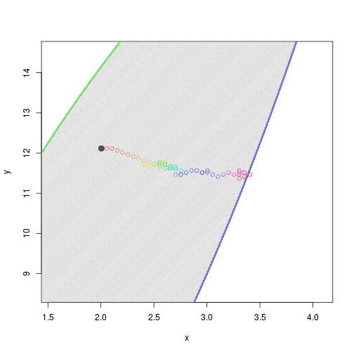
-
Realiza una simulación concreta del proceso con \(M=10000\) y represéntala gráficamente (mediante líneas) sobre la gráfica de la región.
Para este ejercicio utilizaremos el parámetro stop comentado anteriormente, ya que, como veremos al ejecutar el código, el punto sale del recinto cerrado mucho antes de llegar a \(M=10000\).
# Obtenemos la secuencia de puntos especificando que
# no pare de ejecutarse aún saliendo de la región
puntos=ejer_4(max_pasos=10000, stop=FALSE)
# Vemos que aunque haya 10000 iteraciones, se sale del
# recinto mucho antes de llegar hasta ese número
puntos$nPasos
plot(x=puntos$Progresion[,1], y=puntos$Progresion[,2], type='l',
xlab="x", ylab="y", ylim=c(-110,20))
plot_functions(add=TRUE)
text(x=40,y=17.5,labels="Recinto cerrado finito", col="red")
text(x=140,y=-30,labels="Progresión aleatoria de puntos", col="black")
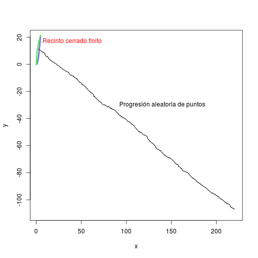
Vemos que el movimiento del punto tiende a crecer en \(x\) y a decrecer en \(y\), algo que es de esperar ya que, según las reglas definidas para el movimiento en el ejercicio 4, es más probable que la suma de los dados sea mayor que 5, y por tanto se sume 0.05 a \(x\), y es más probable que se obtenga cara y cruz o cruz y cara al tirar la moneda dos veces, restándole así 0.05 a \(y\).
-
Realiza esta misma representación gráfica centrada en el punto de salida y con una anchura y altura de 2 unidades.
Para centrar en el punto de salida, \(P_0\), realizaremos un plot del punto e iremos añadiendo el resto de elementos a la gráfica generada. También representaremos el punto en el que salimos por primera vez del recinto cerrado finito.
plot(x=P_0[1], y=P_0[2], pch=19, col="red",
xlim=c(P_0[1]-2,P_0[1]+2), ylim=c(P_0[2]-2,P_0[2]+2), xlab="x", ylab="y")
plot_functions(add=TRUE)
lines(x=c(P_0[1],puntos$Progresion[,1]), y=c(P_0[2],puntos$Progresion[,2]))
points(x=puntos$Progresion[puntos$nPasos,1], y=puntos$Progresion[puntos$nPasos,2], pch=19)
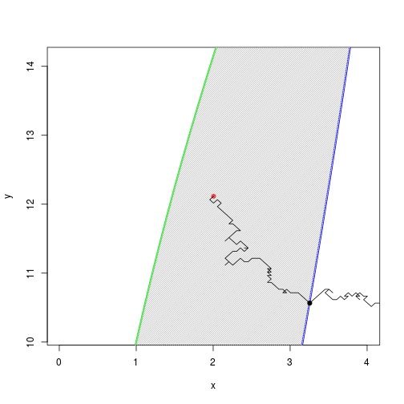
-
Realiza cuatro simulaciones concretas del proceso con \(M=6000\) y represéntalas gráficamente sobre la gráfica de la región utilizando colores distintos para cada una.
Simplemente, repitamos lo mismo que en el ejercicio 5 pero utilizando la función rainbow(4) que nos devolverá 4 colores distintos para representar el movimiento de cada una de las simulaciones.
sim_1 = ejer_4(max_pasos=6000, stop=FALSE)
sim_2 = ejer_4(max_pasos=6000, stop=FALSE)
sim_3 = ejer_4(max_pasos=6000, stop=FALSE)
sim_4 = ejer_4(max_pasos=6000, stop=FALSE)
# Veamos cuantos pasos han necesitado cada uno
pasosNecesitados=c(sim_1$nPasos,sim_2$nPasos,sim_3$nPasos,sim_4$nPasos)
pasosNecesitados
colores=rainbow(4)
plot(x=sim_1$Progresion[,1], y=sim_1$Progresion[,2], type='l',
xlab="x", ylab="y", col=colores[1], ylim=c(-70,20))
lines(x=sim_2$Progresion[,1], y=sim_2$Progresion[,2], col=colores[2])
lines(x=sim_3$Progresion[,1], y=sim_3$Progresion[,2], col=colores[3])
lines(x=sim_4$Progresion[,1], y=sim_4$Progresion[,2], col=colores[4])
plot_functions(add=TRUE)
text(x=120, y=17, col=colores, cex=1.5,
labels=c("sim_1", "\n\nsim_2", "\n\n\n\nsim_3", "\n\n\n\n\n\nsim_4"))
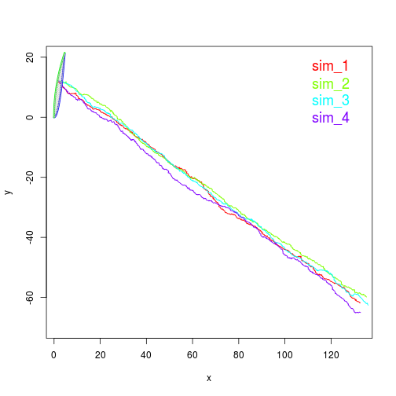
Para ver mejor este resultado, hagamos zoom sobre la región en la que se encuentra el punto \(P_0\) como hemos hecho en el ejercicio anterior y dibujemos el punto en el que se sale por primera vez de la región para cada simulación (con un circulito negro).
plot(x=P_0[1], y=P_0[2], pch=19, col="red",
xlim=c(P_0[1]-2,P_0[1]+2), ylim=c(P_0[2]-2,P_0[2]+2), xlab="x", ylab="y")
plot_functions(add=TRUE)
lines(x=c(P_0[1],sim_1$Progresion[,1]), y=c(P_0[2],sim_1$Progresion[,2]), col=colores[1])
points(x=sim_1$Progresion[sim_1$nPasos,1], y=sim_1$Progresion[sim_1$nPasos,2], pch=19)
lines(x=c(P_0[1],sim_2$Progresion[,1]), y=c(P_0[2],sim_2$Progresion[,2]), col=colores[2])
points(x=sim_2$Progresion[sim_2$nPasos,1], y=sim_2$Progresion[sim_2$nPasos,2], pch=19)
lines(x=c(P_0[1],sim_3$Progresion[,1]), y=c(P_0[2],sim_3$Progresion[,2]), col=colores[3])
points(x=sim_3$Progresion[sim_3$nPasos,1], y=sim_3$Progresion[sim_3$nPasos,2], pch=19)
lines(x=c(P_0[1],sim_4$Progresion[,1]), y=c(P_0[2],sim_4$Progresion[,2]), col=colores[4])
points(x=sim_4$Progresion[sim_4$nPasos,1], y=sim_4$Progresion[sim_4$nPasos,2], pch=19)
text(x=0.25, y=14, col=colores, cex=1.5,
labels=c("sim_1", "\n\nsim_2", "\n\n\n\nsim_3", "\n\n\n\n\n\nsim_4"))
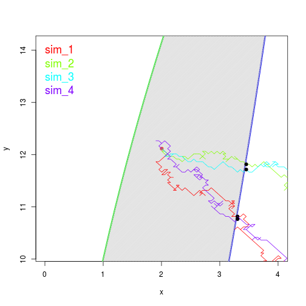
-
Escribe una función con un argumento que permita repetir un número de veces, \(n\), este proceso y devuelva un vector con el número de pasos necesarios para salir del recinto en cada repetición.
La función a desarrollar recorrerá un bucle for y en cada iteración ejecutará el método ejer_4 y añadirá el número de pasos obtenido a un array que se devolverá al terminar el bucle. Lo vemos a continuación:
ejer_8 <- function(n=10, M=100){
vectorPasos=array()
for(i in 1:n)
vectorPasos[i]=ejer_4(max_pasos=M)$nPasos
vectorPasos
}
ejer_8()
## [1] 53 83 63 63 49 NA 49 47 78 85
Utilizando los parámetros por defecto obtenemos un resultado menor a el máximo \(M=100\), salvo en un caso que tomará un número mayor de pasos a \(M\) (la posición 6 del vector de resultados, con el valor NA).
-
Analiza el vector que se obtiene con la función anterior para \(n=1000\) y \(M=3000\) y comenta cómo es la distribución del parámetro pasos necesarios para llegar al límite en este proceso. ¿Es \(M\) suficientemente grande? A la luz de lo obtenido, indica razonadamente si habría que usar un valor mayor o no, y en caso afirmativo, repítelo alterando el valor de \(M\).
Comencemos ejecutando la función anterior con los parámetros n=1000,M=3000 y veamos algunos de sus valores, así como un resumen de los resultados obtenidos.
solucion=ejer_8(n=1000,M=3000)
solucion[1:15]
## [1] 75 42 74 85 93 53 57 40 49 77 45 53 60 49 58
## Min. 1st Qu. Median Mean 3rd Qu. Max.
## 30.00 52.00 60.00 62.59 71.25 165.00
En estas mil llamadas a la función ejer_4, el máximo número de pasos a dar para salir del recinto finito es 165, siendo así un valor muy lejano al máximo de pasos impuesto por el enunciado, \(M=3000\). Por otra parte, vemos que en uno de los casos se ha conseguido salir del recinto en tan solo 30 iteraciones de la simulación, suponiendo que ha salido por el borde izquierdo del recinto (que está más cerca del punto \(P_0\)). Aún así, la media es de 62.59 pasos ya que la probabilidad de salir por el borde izquierdo del recinto (\(x\) decrece) es menor que la de salir por el borde derecho (\(x\) crece), y el borde derecho está más lejos del punto \(P_0\).
Veamos ahora un histograma del número de pasos necesarios para llegar al límite, para así poder estudiar la frecuencia del número de pasos y discernir sobre un valor más óptime de \(M\).
hist(x=solucion, main="Histograma simulación n=1000, M=3000", xlim=c(25,175),
xlab="nPasos", ylab="Frecuencia", col="red", density=50)
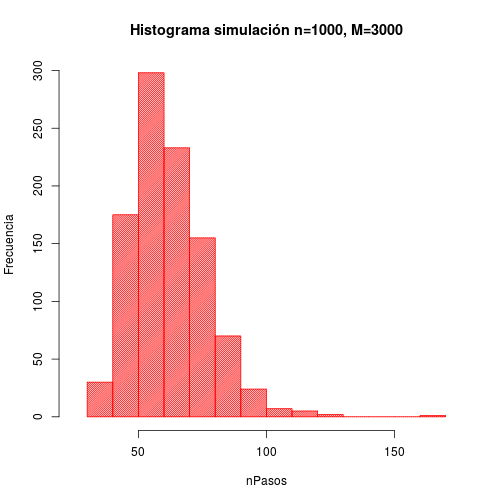
Podemos ver que los valores más repetidos de nPasos se encuentran en torno a 50-60 (frecuencia\(\approx\)300), es decir, en solo 50-60 pasos se sale del recinto cerrado. Este valor, así como el comportamiento del histograma, concuerda muy bien con los resultados obtenidos anteriormente con la función summary. También podemos hacer que los intervalos para los que se comprueba la frecuencia sean más pequeños, obteniendo así más información sobre la solución obtenida:
hist(x=solucion, main="Histograma simulación n=1000, M=3000", xlim=c(25,175),
xlab="nPasos", ylab="Frecuencia", col="red", density=50, breaks=50)
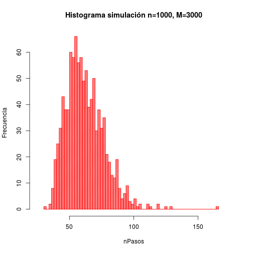
Con estos dos histogramas anteriores podemos ver que hay varios outlier con un valor de nPasos alto, es decir, varias observaciones que son numéricamente distante del resto de los datos, tomando valores de nPasos mayores a 150.
A continuación, veamos la función de densidad que sigue la distribución de la solución, utilizando el método density y pintando la función de densidad inferida sobre el histograma de nuestra solución.
hist(x=solucion, main="Función de densidad de la simulación", col="red",
xlab="nPasos", ylab="Densidad", density=25, prob=T, xlim=c(25,175))
lines(density(solucion),lwd=3, col="darkred")
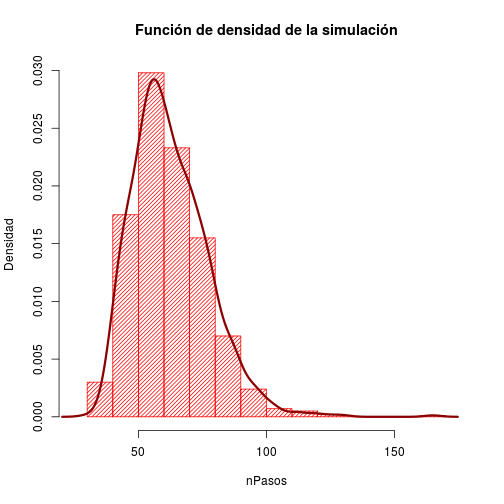
Mirando detenidamente esta fución de densidad, nos da la sensación de que se parece a una distribución normal. ¿Será esto así? Dibujemos la función de densidad obtenida junto a una distribución normal con la misma media y desviación típica que nuestra solución.
plot(density(solucion), type="l", col="darkred", lwd=2, xlab="x", ylab="y",
main="Comparativa fuciones de densidad")
norm_values=20:175
lines(x=norm_values, y=dnorm(x=norm_values, mean=mean(solucion), sd=sd(solucion)),
col="darkgreen", lwd=2)
text(x=150, y=0.028, col=c("darkgreen"), cex=1.5,
labels=expression(paste( "N(", mu, ",", sigma,")")))
text(x=150, y=0.026, col=c("darkred"), cex=1.5, labels="Densidad solución")
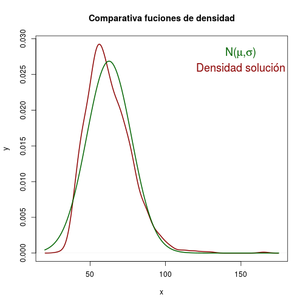
Vemos que casan muy bien las dos funciones, por lo que podríamos decir que la distribución de los pasos necesarios para llegar al límite es la de una normal \(N(\mu=62.592,\sigma=14.84614)\).
Respecto al resto de preguntas del enunciado, \(M\) es suficientemente grande, y podríamos disminuir bastante este parámetro, pues no son necesarias tantas iteraciones. Aún así, es mejor mantener este valor ya que la función ejer_4 deja de ejecutarse y devuelve el resultado cada vez que sale del recinto (si el parámetro stop está puesto a TRUE), por lo que nunca nPasos llegará a \(M\); si lo redujeramos podríamos obtener valores NA, que no podríamos representar en el histograma, haciendo que nuestra muestra de \(n\) simulaciones tuviera valores inservibles. Es decir, es buena idea coger un valor de \(M\) lo suficientemente grande para que obtengamos un resultado válido de nPasos en cada simulación de las \(n\) a realizar.
Como no es necesario usar un valor mayor de \(M\), no repetiremos el proceso alterando su valor.